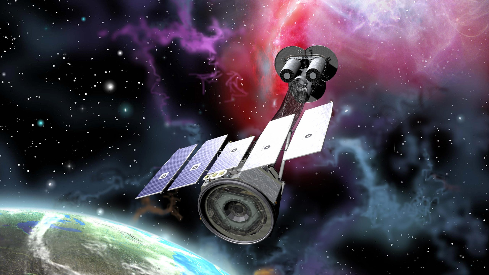
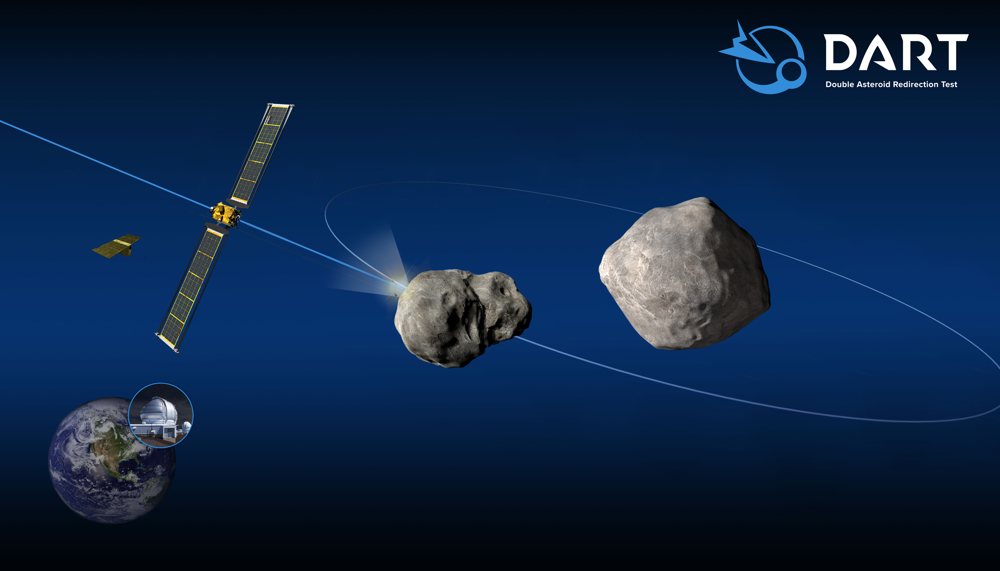
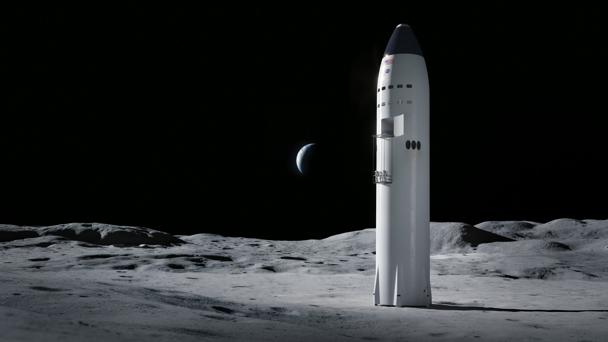
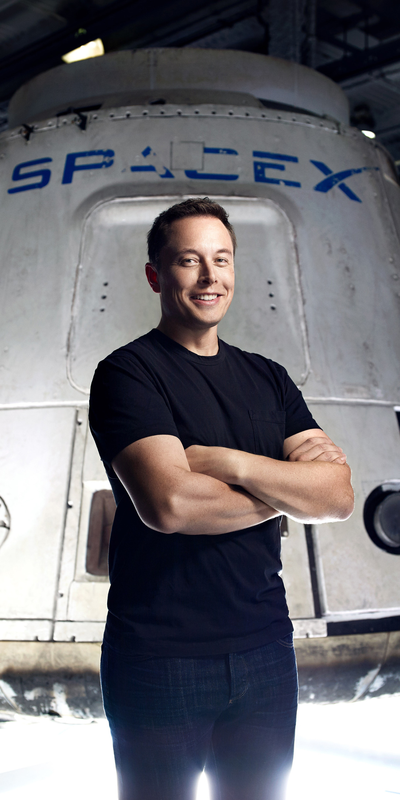

Ana Sayfa
CRS-24
21 Aralık 2021'de SpaceX'in Falcon 9 roketi , Florida'daki Kennedy Uzay Merkezi'ndeki tarihi Fırlatma Kompleksi 39A'dan (LC-39A) NASA için 24. Ticari İkmal Hizmetleri ( CRS-24 ) görevinde Dragon'u fırlattı ve 31. ve son fırlatmamızı tamamladı. yıl. Dragon, kalkıştan yaklaşık on iki dakika sonra Falcon 9'un ikinci etabından ayrıldı ve 22 Aralık Çarşamba günü uzay istasyonuna otonom olarak yanaşacak.
CRS-24 ayrıca yörünge sınıfı bir roket güçlendiricinin 100. geri kazanımını işaret etti. SpaceX, yörünge sınıfı roketlerin itici inişini ve yeniden uçuşunu gerçekleştirebilen dünyadaki tek fırlatma sağlayıcısı olmaya devam ediyor. Roketlerin çoğu fırlatıldıktan sonra harcanıyor - bir kros uçuşundan sonra bir uçağı atmaya benzer - SpaceX yeniden kullanılabilir roketlerin norm olduğu bir gelecek için çalışıyor. Bugüne kadar SpaceX'in sahip olduğu özellikler:
- 138 başarılı görev başlattı;
- İlk aşama roket güçlendiricileri 100 kez indi; ve
- 2017'de bir Falcon 9'un ilk yeniden uçuşundan bu yana SpaceX'in görevlerinin yüzde 75'ini tamamlayan uçuşla kanıtlanmış ilk aşamalarla 78 kez yeniden akıtılan güçlendiriciler.
2021 özellikle etkileyiciydi, bu sırada SpaceX ekibi:
- Tüm görevlerin yüzde 94'ünü uçuşta kanıtlanmış Falcon 9 güçlendiricilerde başlattı;
- Sekiz astronot , yörüngedeki laboratuvara yaklaşık 28.000 pound kritik kargo ve bilimsel araştırma taşımanın yanı sıra, NASA için Uluslararası Uzay İstasyonuna güvenli bir şekilde taşındı ;
- Hubble görevlerinden bu yana Dünya gezegeninden herhangi bir insan uzay uçuşundan daha uzağa uçan , dünyanın ilk tamamen sivil astronot misyonunu tamamladı;
- Diğer önemli bilimsel görevlerin yanı sıra, bir asteroidi yeniden yönlendirmek için insanlığın ilk gezegen savunma testini başlattı ; ve
- Düşük Dünya yörüngesine 800'den fazla Starlink uydusu yerleştirdi ve bu uydular, 150.000'den fazla müşteriyi birbirine bağlamaya ve yüksek hızlı, düşük gecikmeli internet ile dünya çapında saymaya yardımcı oluyor.
Önümüzdeki yıl, SpaceX'in fırlatma temposu, uçuşu kanıtlanmış misyonların, insan uzay uçuşlarının, Falcon Heavy misyonlarının ve Starlink tarafından internete bağlanan insanların sayısı artmaya devam edecek. Ayrıca, Starship'in ilk yörünge uçuşunu hedefliyoruz ve NASA için, Mars'a ve ötesine giderken, insanlığın Ay'a geri dönmesine yardımcı olacak bir ay iniş aracının geliştirilmesine devam ettik.

Starlink
18 Aralık günü saat 4:41'de (PST) Falcon 9 , California'daki Vandenberg Uzay Kuvvetleri Üssü'ndeki Space Launch Complex 4 East'ten (SLC-4E) 52 Starlink uydusunu alçak Dünya yörüngesine fırlattı ve bir yörüngenin ilk onbirinci fırlatma ve inişini tamamladı sınıf roket güçlendirici.
Falcon 9 ilk aşama güçlendirici, Dragon'un ilk mürettebat tanıtım görevi olan RADARSAT Constellation Mission, SXM-7 ve şimdi de 8 Starlink görevini başlattı.
GÖRÜNTÜLEME X-RAY POLARİMETRİ GEZGİNİ (IXPE)
9 Aralık Perşembe günü saat 1:00 EST'de Falcon 9, NASA'nın Florida'daki Kennedy Uzay Merkezi'ndeki tarihi Fırlatma Kompleksi 39A'dan (LC-39A) alçak Dünya yörüngesine NASA'nın Görüntüleme X-ışını Polarimetri Gezgini'ni ( IXPE ) fırlattı . Bu, NASA'nın Fırlatma Hizmeti Programının beşinci uçuşuydu.
Bu, daha önce Crew-1, Crew-2, SXM-8 ve CRS-23'ün fırlatılmasını destekleyen Falcon 9'un ilk aşama güçlendiricisinin beşinci uçuşuydu. Bu görev, SpaceX'in 130. Falcon 9 uçuşunu ve 90. başarılı inişini kutladı.
ÇİFT ASTEROİD YÖNLENDİRME TESTİ (DART)
23 Kasım Salı günü 22:21 PST'de Falcon 9, NASA'nın Kaliforniya'daki Vandenberg Uzay Kuvvetleri Üssü'ndeki Space Launch Complex 4 East'ten (SLC-4E) gezegenler arası bir transfer yörüngesine Çift Asteroid Yönlendirme Testi (DART) görevini başlattı . DART , gelecekte Dünya'yı tehdit eden bir asteroidin keşfedilmesi durumunda, bir uzay aracını kasıtlı olarak bir asteroide çarpmanın rotasını değiştirmenin etkili bir yolu olup olmadığını görmek için insanlığın ilk gezegen savunma testi görevidir. Bu, SpaceX'in ilk gezegenler arası göreviydi.
Bu, daha önce Sentinel-6 Michael Freilich'in fırlatılmasını ve bir Starlink görevini destekleyen Falcon 9'un ilk aşama güçlendiricisinin üçüncü uçuşuydu.
STARSHİP, NASA ASTRONOTLARINI AY'A İNDİRECEK
Ay'a sadece 24 insan gitti ve 1972'den beri kimse geri dönmedi. Bugün NASA , Apollo programından bu yana ay yüzeyine ilk astronotları indirmek için Starship'i seçtiklerini duyurdu . NASA'nın yeni bir insan uzay araştırmaları çağını başlatmasına yardımcı olmaktan onur duyuyoruz.
NASA ve SpaceX birlikte, Amerika'nın astronotları yörüngeye fırlatma ve onları güvenli bir şekilde evlerine döndürme becerisini geri kazandırmak da dahil olmak üzere benzer şekilde cesur ve yenilikçi ortaklıkları başarıyla gerçekleştirdi. Ay'a geri dönmek için ortak başarılarımızı geliştireceğiz ve yıllarca süren yakın teknik işbirliğinden yararlanacağız. Bunu yaparken, Mars'a ve ötesine insan keşfi için zemin hazırlayacağız.
Ay'da insan varlığını sürdürmek, mürettebatın ve önemli miktarda kargonun güvenli ve uygun fiyatlı taşınmasını gerektirecektir. SpaceX'in Starship uzay aracı ve Süper Ağır roketi, bu temel yapı taşlarını sağlamak için benzersiz bir şekilde tasarlanmış sağlam yeteneklere ve güvenlik özelliklerine sahip, entegre ve tamamen yeniden kullanılabilir bir fırlatma, itici dağıtım, buluşma ve gezegensel iniş sistemini temsil eder.
Ay yörüngesi ile Ay'ın yüzeyi arasında uçan Starship, mürettebatı ve kapsamlı yüzey araştırmaları için gereken tüm malzeme, ekipman ve bilim yüklerini taşıyacak. Dragon ve Falcon'un güvenlik ve güvenilirliğini temel alan Starship, kanıtlanmış aviyonik, rehberlik ve navigasyon sistemleri, otonom buluşma, yanaşma ve hassas iniş yeteneklerinin yanı sıra termal koruma ve Dragon'da kullanılan tanıdık ekran ve arayüzlere sahip geniş bir kabine sahip olacak .
SpaceX, fırlatma aracı ve motor geliştirme programlarının kapsamlı bir geçmişinden yararlanarak Starship geliştirmesini hızla ilerletiyor . Ocak 2020'den bu yana SpaceX, her yapıda hızlanan üretim ve aslına uygunluk ile 10 Starship prototipi inşa etti. SpaceX, 60'tan fazla Starship'in Raptor motorunu üretmiş ve test etmiş, birden fazla Starship statik yangını ve uçuş testi de dahil olmak üzere 567 motor çalıştırmada yaklaşık 30.000 saniyelik toplam test süresi biriktirmiştir. İki 150 m atlama ve dört yüksek irtifa uçuşu dahil olmak üzere altı yörünge altı uçuş testi gerçekleştirdik. SpaceX ayrıca yol bulma çabasının bir parçası olarak tam boyutlu bir Süper Ağır güçlendirici inşa etti ve şu anda üretimde beş araç bulunuyor.
NASA'nın ilk kadını ve sonraki erkeği güvenli bir şekilde Ay'ın yüzeyine indiren Artemis Programının bir parçası olmaktan onur duyuyoruz.